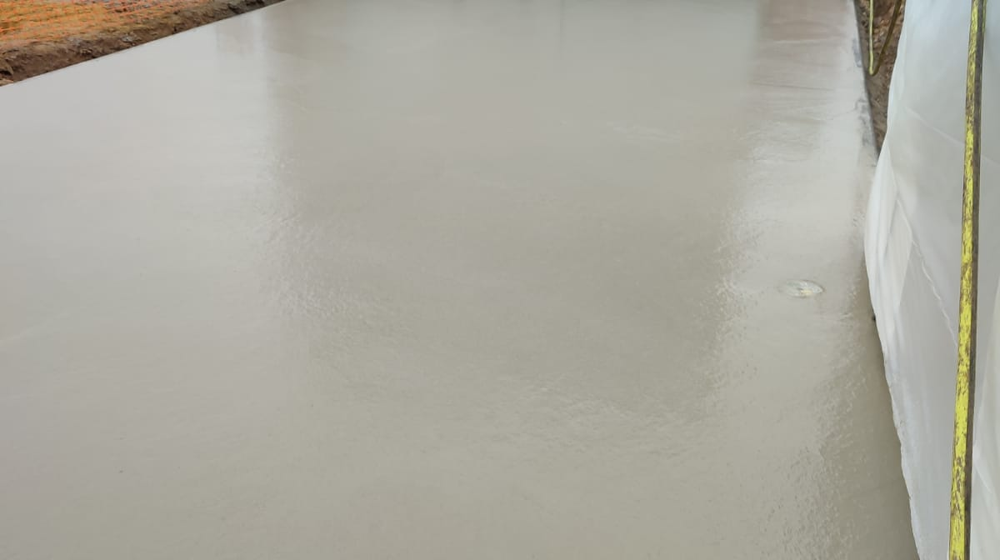
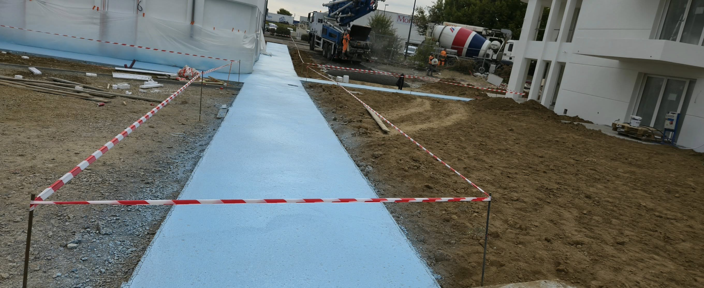
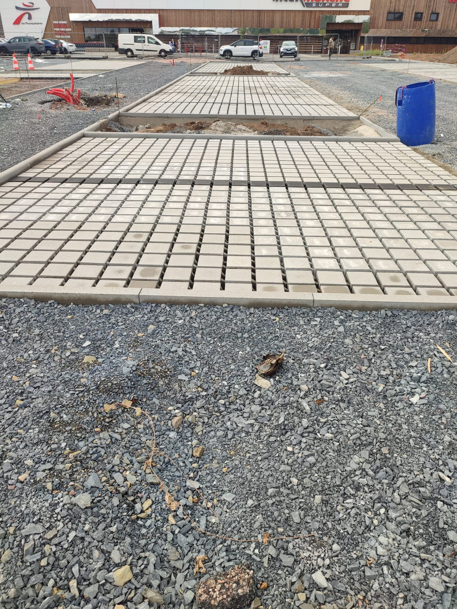

Fırçalanmış Beton
- Doğal taş görünümü sunan estetik yüzeyler
- yüzey özelliği ile güvenli zeminler
- Uzun ömürlü ve düşük bakım gerektiren yapı
- Her türlü hava koşuluna dayanıklı yüzeyler

- Dekoratif ve dayanıklı yüzey işleme
- Geleneksel taş doku görünümü
- Yüksek aşınma direnci
- Özel tasarım imkanları
Çekiçlenmiş Beton

- Ahşap, taş veya özel desen seçenekleri
- Renkli ve dokulu yüzey alternatifleri
- Estetik ve ekonomik çözüm
- Hızlı uygulama süresi
Damgalanmış Beton

- Çevre dostu su yönetimi çözümü
- Yağmur suyunun toprağa sızmasını sağlama
- Yüzey su birikmesini önleme
- Ekolojik dengeye katkı
- Kenar Bordür Montajı
- Yol ve yaya yollarında net sınırlandırma
- Estetik görünüm ve düzenli hatlar
- Zemin kaplamalarının korunması
- Trafik güvenliği için sınır belirleme
- Uzun ömürlü ve dayanıklı montaj
Geçirgen Beton
- Geleneksel ve modern desen seçenekleri Yüksek dayanıklılık ve uzun ömür Kolay tamir ve bakım imkanı Su geçirgen yapı ile çevre dostu Peyzaj ile uyumlu estetik çözümler Döşeme Sistemleri İç ve dış mekan için özel çözümler Seramik, porselen, doğal taş seçenekleri Modern tasarım ve fonksiyonel yapı Isı ve ses yalıtımı özellikli sistemler Montaj sonrası teknik destek Dış Cephe Kaplamaları Dış Cephe Sıvası Isı yalıtımı sağlayan modern sıva sistemleri Neme ve küfe dayanıklı yapı Estetik ve renkli yüzey seçenekleri Uzun ömürlü ve düşük bakım maliyeti Tuğla Kaplamalar Geleneksel görünüm, modern performans Isı ve ses yalıtım özellikleri Kolay montaj ve uzun ömür Doğal malzeme avantajları Bakım gerektirmeyen yapı Neden Bizi Tercih Etmelisiniz? Kalite Garantisi Standartlara uygun malzeme kullanımı Deneyimli teknik ekip Kalite kontrol süreçleri Zamanında Teslim Proje planına sadık kalma Hızlı ve etkin uygulama Müşteri memnuniyeti odaklı çalışma Uygun Maliyet Rekabetçi fiyat politikası Kalite-maliyet dengesi Uzun vadeli ekonomik çözümler Teknik Destek Uygulama sonrası destek Bakım ve onarım hizmetleri 7/24 danışmanlık